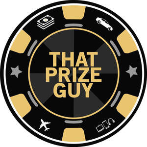

Trade Mark Journal No.2026/009 27 February 2026
UK00004336773 6 February 2026 (5,21,25,30,32,33)

- Class 5
- Car air freshener.
- Class 21
- Mugs; Cups and mugs; Coffee mugs; Ceramic mugs; Earthenware mugs; Porcelain mugs; Mugs of porcelain; Beer mugs; Glass mugs; China mugs; Mugs of china; Insulated mugs; Travel mugs; Mug cosies; Water bottles; Plastic water bottles; Aluminum water bottles; Siphon bottles for carbonated water; Siphon bottles for aerated water; Covers for water bottles; Plastic water bottles [empty]; Aluminum water bottles, empty; Water bottles for bicycles; Empty water bottles for bicycles; Drinking bottles; Bottle coolers; Bottle buckets.
- Class 25
- Clothing; Work clothes; Jackets [clothing]; Shorts [clothing]; Clothes for sports; Headgear for wear; Exercise wear; Rain wear; Ladies wear.
- Class 30
- Ice cream drinks.
- Class 32
- Non-alcoholic drinks; Cola drinks; Juice drinks; Carbonated non-alcoholic drinks; Non-alcoholic fruit drinks; Isotonic non-alcoholic drinks; Isotonic drinks; Fruit drinks; Guarana drinks; Carbohydrate drinks; Energy drinks; Non-alcoholic malt drinks; Soft drinks; Sports drinks; Colas [soft drinks]; Slush drinks; Non-alcoholic beverages; Vegetable drinks; Beverages (Non-alcoholic -); Non-carbonated soft drinks.
- Class 33
- Wine-based drinks.
that prize guy ltd